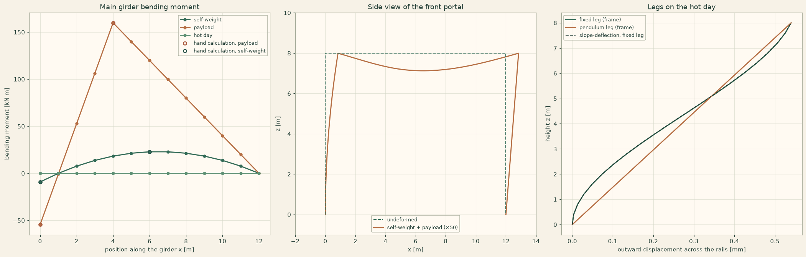
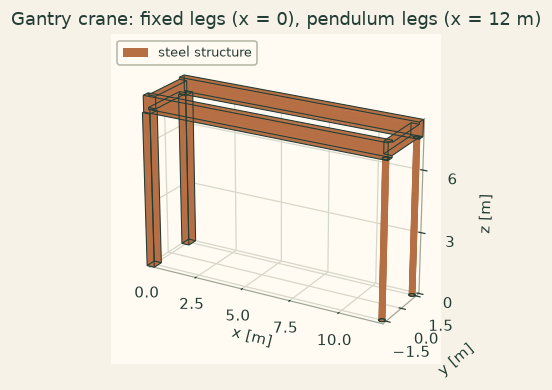

Docs › Examples › Stresses in a gantry crane with internal hinges
Beams and frames · 3D
Stresses in a gantry crane with internal hinges
A whole 15-tonne gantry crane, with clamped fixed legs and hinged pendulum legs, is computed as a 3D frame for self-weight, payload and a hot summer day.
Run locally with OneSimulation. The example downloads are free. Running them requires an activated runtime. Runtime Alpha 0.2.1a7 · CPython 3.13 on macOS (Apple Silicon), Ubuntu 22.04 (x86-64), and Windows x64. Installation and activation · View pilot plans. Scope of the reference checks.

What it computes
OneSimulation reads the solid crane from a STEP file and solves the statically indeterminate 3D frame along its member centre lines: box-section girders, fixed legs and end girders, tubular pendulum legs with moment hinges at their tops, self-weight from the density, the payload under the trolley and a uniform temperature rise. The script that builds the STEP file comes with the notebook.
What it checks
Reactions balance the loads to 1e-7 N m and are mirror-symmetric to 1e-11; pendulum forces, fixed-leg moments and girder moments match the force-method hand calculation of one portal to 1e-10, the hinges keep the girders free of thermal force and moment while their ends move exactly α ΔT L apart, and the fixed-side end frame matches the slope-deflection solution within 0.7 %.
Geometry
The notebook starts at the import of the CAD file portal_crane_frame_stress.step: STEP (AP242), readable by any CAD program, with the names of the faces that the boundary conditions use. Put it next to the notebook.

The geometry script
The script portal_crane_frame_stress_geometry.py builds the geometry with the CAD objects of OneSimulation and writes the file. Change a dimension there, run it, and run the notebook again.
"""Geometry of the OneSimulation example "Stresses in a gantry crane with internal hinges".
Builds a solid model of the whole gantry crane with the CAD objects of OneSimulation and writes
portal_crane_frame_stress.step: two box-section main girders (12 m span, centre lines 8 m above the
rails and 3 m apart), two box-section fixed legs on one rail, two tubular pendulum legs on the other
rail and an end girder across each end. The rails run along y; the span is along x. The example
computes the crane as a frame along the centre lines of these members and uses the solid for the
picture.
"""
from onesim.cad.d3 import AnnularCylinder, Box, UnionFromObjects
span, height, half_gauge = 12.0, 8.0, 1.5
parts = []
for y in (-half_gauge, half_gauge):
parts.append(
Box(length=0.4, width=0.6, height=height - 0.4, origin=(-0.2, y - 0.3, 0.0))
)
parts.append(
Box(
length=span + 0.4,
width=0.4,
height=0.8,
origin=(-0.2, y - 0.2, height - 0.4),
)
)
parts.append(
AnnularCylinder(
inner_radius=0.14,
outer_radius=0.15,
length=height - 0.4,
origin=(span, y, 0.0),
)
)
for x in (0.0, span):
parts.append(
Box(
length=0.4,
width=2 * half_gauge + 0.4,
height=0.6,
origin=(x - 0.2, -half_gauge - 0.2, height - 0.3),
)
)
crane = UnionFromObjects(objects=tuple(parts))
crane.save("portal_crane_frame_stress.step")The notebook
The complete notebook, cell by cell. Run it to produce the figures and the comparison printout.
A gantry crane straddles a yard on two rails. On one rail it stands on stiff "fixed" legs, on the other on slender "pendulum" legs with a moment hinge at the top. The hinges let the main girders grow and shrink with temperature without bending the legs; the fixed legs, clamped to their bogies, keep the crane upright and make it statically indeterminate.
Setup. Span \(L=12\) m along \(x\), girder height \(H=8\) m, girder centre lines at \(y=\pm1.5\) m. Main girders and fixed legs are welded box sections (\(A=1.98\cdot10^{-2}\) m², \(I=5.77\cdot10^{-4}\) m⁴ about the axis normal to the girder plane, \(1.08\cdot10^{-4}\) m⁴ about the other, \(J=1.5\cdot10^{-4}\) m⁴), the end girders smaller boxes (\(A=1.2\cdot10^{-2}\) m², \(I=2\cdot10^{-4}\) / \(0.6\cdot10^{-4}\) m⁴), the pendulum legs tubes of 300 mm diameter and 10 mm wall. Steel: \(E=210\) GPa, \(G=81\) GPa, \(\rho=7850\) kg/m³, \(\alpha=12\cdot10^{-6}\) 1/K. Load cases: (1) self-weight; (2) a payload of 15 t, carried by the trolley on both girders 4 m from the fixed legs; (3) a uniform temperature rise of 30 K of the whole steel structure. The solid model comes from the CAD file portal_crane_frame_stress.step, written by portal_crane_frame_stress_geometry.py with the CAD objects of OneSimulation; the frame follows the centre lines of its members.
| joint | condition |
|---|---|
| feet of the fixed legs | clamped (all six degrees of freedom) |
| feet of the pendulum legs | pinned (translations held) |
| tops of the pendulum legs | moment hinges (member start released about both bending axes) |
| girders at the trolley | half the payload on each girder |
Reference. (1) Equilibrium: reactions balance the applied forces and their moments about the origin. (2) Symmetry: the crane and its loads are mirror-symmetric to the plane \(y=0\). (3) Hand calculations of subsystems. Under symmetric vertical load each girder with its fixed leg and pendulum leg forms a plane portal. The pendulum leg carries only an axial force, so the fixed leg is a cantilever loaded by the girder end moment \(M_0\) alone, and \(M_0\) follows from one compatibility condition (force method): the end rotation of the simply supported girder \(\theta_0\) plus the tilt from the axial shortening of the legs equals the rotation of the fixed leg top,
with the mean axial forces \(\bar N\) of the legs at \(M_0=0\). Temperature: the pendulum legs cannot hold the girders back, so the girders carry no axial force and no bending, and the girder ends at the pendulum legs move \(\alpha\Delta T L\) further than at the fixed legs. Across the rails the end girder at the fixed legs is restrained by the clamped legs: a symmetric fixed-base frame whose beam grows by \(\alpha\Delta T\,2c\) (slope-deflection method, legs bent about their weak axis). The main girders, which twist when the leg tops turn, stiffen this frame a little; the hand calculation leaves them out.
import numpy as np
from onesim.cad.exchange import load
from onesim.physics.solid_mechanics import (
FrameMember,
SpatialFrame,
ThermalFrameMemberLoads,
)
from onesim.visualization import plots, theme
theme.set()Geometry
The solid model shows the members; the frame model uses their centre lines.
crane_solid = load("portal_crane_frame_stress.step")
plots.geometry(
crane_solid,
selection={"steel structure": crane_solid.boundaries.all},
labels=False,
camera=plots.Camera(elevation=22, azimuth=-60),
title="Gantry crane: fixed legs (x = 0), pendulum legs (x = 12 m)",
)
plots.show()Frame model
Each girder is divided into 1 m members so that the trolley sits on a joint. The joints of one rail side are numbered from the foot of the fixed leg along the girder to the foot of the pendulum leg. The pendulum legs run from the girder down to their feet and are released at their start.
span, height, half_gauge, trolley, n = 12.0, 8.0, 1.5, 4.0, 12
payload, density, steel, shear, alpha, warming = (
15e3 * 9.81,
7850.0,
210e9,
81e9,
12e-6,
30.0,
)
box = dict(
youngs_modulus=steel,
shear_modulus=shear,
area=1.98e-2,
bending_inertia_y=5.77e-4,
bending_inertia_z=1.08e-4,
torsion_constant=1.5e-4,
)
end_box = dict(
youngs_modulus=steel,
shear_modulus=shear,
area=1.2e-2,
bending_inertia_y=2.0e-4,
bending_inertia_z=0.6e-4,
torsion_constant=0.8e-4,
)
tube = dict(
youngs_modulus=steel,
shear_modulus=shear,
area=np.pi * (0.15**2 - 0.14**2),
bending_inertia_y=np.pi * (0.15**4 - 0.14**4) / 4,
bending_inertia_z=np.pi * (0.15**4 - 0.14**4) / 4,
torsion_constant=np.pi * (0.15**4 - 0.14**4) / 2,
)
sides = {"front": -half_gauge, "rear": half_gauge}
joints, foot, top, prop = [], {}, {}, {}
for side, y in sides.items():
foot[side] = len(joints)
joints.append((0.0, y, 0.0))
for k in range(n + 1):
top[side, k] = len(joints)
joints.append((span * k / n, y, height))
prop[side] = len(joints)
joints.append((span, y, 0.0))
members = [
member
for side in sides
for member in (
FrameMember(
name=f"fixed leg {side}", start=foot[side], end=top[side, 0], **box
),
*(
FrameMember(
name=f"girder {side} {k}",
start=top[side, k],
end=top[side, k + 1],
**box,
)
for k in range(n)
),
FrameMember(
name=f"pendulum leg {side}",
start=top[side, n],
end=prop[side],
releases=("start_ry", "start_rz"),
**tube,
),
)
]
members += [
FrameMember(
name="end girder fixed side",
start=top["front", 0],
end=top["rear", 0],
local_y=(-1.0, 0.0, 0.0),
**end_box,
),
FrameMember(
name="end girder pendulum side",
start=top["front", n],
end=top["rear", n],
local_y=(-1.0, 0.0, 0.0),
**end_box,
),
]
crane = SpatialFrame(joints=np.array(joints), members=tuple(members))
supports = [
(foot[side], dof, 0.0)
for side in sides
for dof in ("x", "y", "z", "rx", "ry", "rz")
] + [(prop[side], dof, 0.0) for side in sides for dof in ("x", "y", "z")]
print(
f"{len(crane.joints)} joints, {len(crane.members)} members, {len(supports)} support conditions"
)Load cases
self_weight turns density and gravity into distributed loads in the axes of every member. The payload is split onto the two girder joints under the trolley. The temperature rise acts on all members.
k_trolley = int(round(trolley / span * n))
cases = {
"self-weight": crane.solve(
supports=supports, line_loads=crane.self_weight(density=density)
),
"payload": crane.solve(
supports=supports,
forces={top[side, k_trolley]: (0.0, 0.0, -payload / 2) for side in sides},
),
"hot day": crane.solve(
supports=supports,
member_loads=ThermalFrameMemberLoads.linear_temperature(
temperature=293.15 + warming,
reference_temperature=293.15,
expansion_coefficient=alpha,
),
),
}
girder_moment = {
name: np.array(
[result.members[f"girder front {k}"].local_end_actions[4] for k in range(n)]
+ [-result.members[f"girder front {n - 1}"].local_end_actions[10]]
)
for name, result in cases.items()
}Equilibrium and symmetry
Applied loads: the weight of every member at its midpoint, and the payload. The mirror image of a reaction at \(y<0\) has the force components \((F_x,-F_y,F_z)\) and the moment components \((-M_x,M_y,-M_z)\).
lengths = np.array(
[np.linalg.norm(crane.joints[m.end] - crane.joints[m.start]) for m in crane.members]
)
centres = np.array(
[(crane.joints[m.start] + crane.joints[m.end]) / 2 for m in crane.members]
)
weights = np.array([density * 9.81 * m.area for m in crane.members]) * lengths
applied = {
"self-weight": (
np.array([0.0, 0.0, -weights.sum()]),
np.cross(centres, np.column_stack((0 * weights, 0 * weights, -weights))).sum(
axis=0
),
),
"payload": (
np.array([0.0, 0.0, -payload]),
sum(
np.cross(crane.joints[top[side, k_trolley]], (0.0, 0.0, -payload / 2))
for side in sides
),
),
"hot day": (np.zeros(3), np.zeros(3)),
}
mirror_force, mirror_moment = np.array([1.0, -1.0, 1.0]), np.array([-1.0, 1.0, -1.0])
for name, result in cases.items():
force = result.reaction_force.sum(axis=0) + applied[name][0]
moment = (
result.reaction_moment + np.cross(crane.joints, result.reaction_force)
).sum(axis=0) + applied[name][1]
scale = np.abs(result.reaction_force).max()
asymmetry = max(
np.abs(
result.reaction_force[[foot["rear"], prop["rear"]]]
- mirror_force * result.reaction_force[[foot["front"], prop["front"]]]
).max()
/ scale,
np.abs(
result.reaction_moment[foot["rear"]]
- mirror_moment * result.reaction_moment[foot["front"]]
).max()
/ (scale * span),
)
print(
f"{name:12s}: force balance {np.abs(force).max():.1e} N, moment balance {np.abs(moment).max():.1e} N m "
f"(largest reaction {scale / 1e3:.2f} kN); mirror asymmetry {asymmetry:.1e}"
)Hand calculations of the subsystems
The vertical load cases against the force method for one portal, the hot day against the free expansion along the girders and the slope-deflection solution of the fixed-side end frame.
EI_leg, EI_girder, EA_leg, EA_prop = (
steel * box["bending_inertia_y"],
steel * box["bending_inertia_y"],
steel * box["area"],
steel * tube["area"],
)
restraint = lambda theta, fixed_force, prop_force: (
theta + height / span * (prop_force / EA_prop - fixed_force / EA_leg)
) / (
height / EI_leg
+ span / (3 * EI_girder)
+ height / span**2 * (1 / EA_prop + 1 / EA_leg)
)
q, b = payload / 2, span - trolley
m_payload = restraint(
q * trolley * b * (span + b) / (6 * span * EI_girder),
q * b / span,
q * trolley / span,
)
prop_payload, trolley_moment = (q * trolley - m_payload) / span, (
q * trolley - m_payload
) / span * b
w, w_end, w_leg, w_prop = (
density * 9.81 * box["area"],
density * 9.81 * end_box["area"] * 2 * half_gauge,
density * 9.81 * box["area"] * height,
density * 9.81 * tube["area"] * height,
)
m_weight = restraint(
w * span**3 / (24 * EI_girder),
w * span / 2 + w_end / 2 + w_leg / 2,
w * span / 2 + w_end / 2 + w_prop / 2,
)
prop_weight, middle_moment = (
w * span / 2 - m_weight / span + w_end / 2 + w_prop,
w * span**2 / 8 - m_weight / 2,
)
rows = (
(
"payload",
"pendulum foot force",
cases["payload"].reaction_force[prop["front"], 2],
prop_payload,
"kN",
),
(
"payload",
"fixed leg foot moment",
-cases["payload"].reaction_moment[foot["front"], 1],
m_payload,
"kN m",
),
(
"payload",
"girder moment under the trolley",
girder_moment["payload"][k_trolley],
trolley_moment,
"kN m",
),
(
"self-weight",
"pendulum foot force",
cases["self-weight"].reaction_force[prop["front"], 2],
prop_weight,
"kN",
),
(
"self-weight",
"fixed leg foot moment",
-cases["self-weight"].reaction_moment[foot["front"], 1],
m_weight,
"kN m",
),
(
"self-weight",
"girder moment at midspan",
girder_moment["self-weight"][n // 2],
middle_moment,
"kN m",
),
)
for case, quantity, frame_value, hand, unit in rows:
print(
f"{case:12s} {quantity:32s}: frame {frame_value / 1e3:9.4f} {unit:4s}, hand calculation {hand / 1e3:9.4f}, deviation {100 * (frame_value / hand - 1):+.1e} %"
)
hot = cases["hot day"]
girder_actions = np.array(
[
hot.members[f"girder {side} {k}"].local_end_actions
for side in sides
for k in range(n)
]
)
print(
f"hot day girders: largest axial force {np.abs(girder_actions[:, [0, 6]]).max():.1e} N, largest vertical bending moment "
f"{np.abs(girder_actions[:, [4, 10]]).max():.1e} N m (both zero by the hinges)"
)
print(
f"hot day girder end at the pendulum legs moves {1e3 * (hot.displacement[top['front', n], 0] - hot.displacement[top['front', 0], 0]):.4f} mm "
f"further than at the fixed legs (α ΔT L = {1e3 * alpha * warming * span:.4f} mm)"
)
EI_weak, EI_end, EA_end, spread = (
steel * box["bending_inertia_z"],
steel * end_box["bending_inertia_y"],
steel * end_box["area"],
alpha * warming * 2 * half_gauge,
)
sway, turn, thrust = np.linalg.solve(
[
[
-6 * EI_weak / height**2,
4 * EI_weak / height + 2 * EI_end / (2 * half_gauge),
0.0,
],
[12 * EI_weak / height**3, -6 * EI_weak / height**2, -1.0],
[1.0, 0.0, 2 * half_gauge / (2 * EA_end)],
],
[0.0, 0.0, spread / 2],
)
foot_moment = EI_weak / height * (2 * turn - 6 * sway / height)
print(
f"hot day fixed-side end frame: foot shear {abs(hot.reaction_force[foot['front'], 1]) / 1e3:.4f} kN (slope-deflection {thrust / 1e3:.4f}), "
f"foot moment {abs(hot.reaction_moment[foot['front'], 0]) / 1e3:.4f} kN m ({abs(foot_moment) / 1e3:.4f}), "
f"leg top moves out {1e3 * abs(hot.displacement[top['front', 0], 1]):.5f} mm ({1e3 * sway:.5f}; free {1e3 * spread / 2:.5f})"
)Figure
Left the bending moment along a main girder for the three load cases with the hand-calculated values; middle the side view of the front portal under self-weight and payload, 50 times enlarged and drawn along the bent members: the girder end turns the fixed leg and the crane leans towards the pendulum legs; right the outward displacement of the legs on the hot day along their height: the clamped fixed leg bends as the slope-deflection solution says, the pendulum leg tilts freely.
x = np.linspace(0.0, span, n + 1)
chain = [
f"fixed leg front",
*(f"girder front {k}" for k in range(n)),
"pendulum leg front",
]
s = np.linspace(0.0, 1.0, 21)
loaded = {
name: cases["self-weight"]
.members[name]
.evaluate(s * cases["self-weight"].members[name].length)[0]
+ cases["payload"]
.members[name]
.evaluate(s * cases["payload"].members[name].length)[0]
for name in chain
}
path = np.vstack(
[
crane.joints[m.start] + np.outer(s, crane.joints[m.end] - crane.joints[m.start])
for m in crane.members
if m.name in chain
]
)
bent = path + 50 * np.vstack([loaded[m.name] for m in crane.members if m.name in chain])
leg = hot.members["fixed leg front"].evaluate(s * height)[0]
pendulum = hot.members["pendulum leg front"].evaluate(s * height)[0]
fig = plots.figure(1, 3, size=(19, 6))
plots.line(
y={name: (x, values / 1e3) for name, values in girder_moment.items()},
markers=True,
points={
"hand calculation, payload": (
np.array([0.0, trolley]),
np.array([-m_payload, trolley_moment]) / 1e3,
),
"hand calculation, self-weight": (
np.array([0.0, span / 2]),
np.array([-m_weight, middle_moment]) / 1e3,
),
},
xlabel="position along the girder x [m]",
ylabel="bending moment [kN m]",
title="Main girder bending moment",
legend="upper right",
ax=fig[0],
)
plots.line(
y={
"undeformed": (path[:, 0], path[:, 2]),
"self-weight + payload (×50)": (bent[:, 0], bent[:, 2]),
},
styles={"undeformed": "dashed"},
xlimits=(-2, 14),
ylimits=(-1, 10),
xlabel="x [m]",
ylabel="z [m]",
title="Side view of the front portal",
legend="lower center",
ax=fig[1],
)
plots.line(
y={
"fixed leg (frame)": (-1e3 * leg[:, 1], s * height),
"pendulum leg (frame)": (-1e3 * pendulum[::-1, 1], s * height),
},
reference={
"slope-deflection, fixed leg": (
1e3 * (sway * (3 * s**2 - 2 * s**3) + height * turn * (s**3 - s**2)),
s * height,
)
},
xlabel="outward displacement across the rails [mm]",
ylabel="height z [m]",
title="Legs on the hot day",
legend="upper left",
ax=fig[2],
)
plots.show()Going further
Move the trolley along the girders, or to one girder only, to find the governing load position; replace the moment hinges by rigid joints and see the thermal moments that the hinges avoid; or combine the cases with partial safety factors and check the stresses against the yield strength.